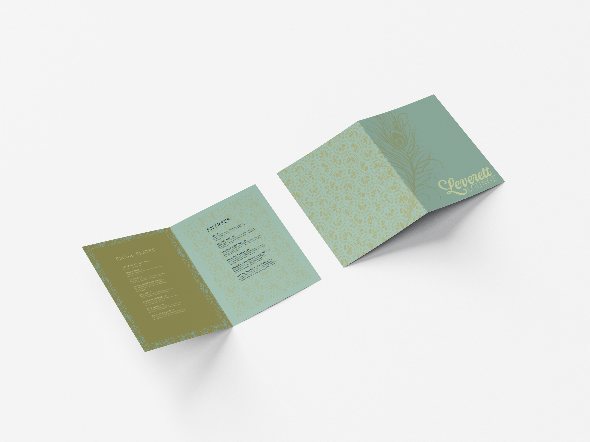
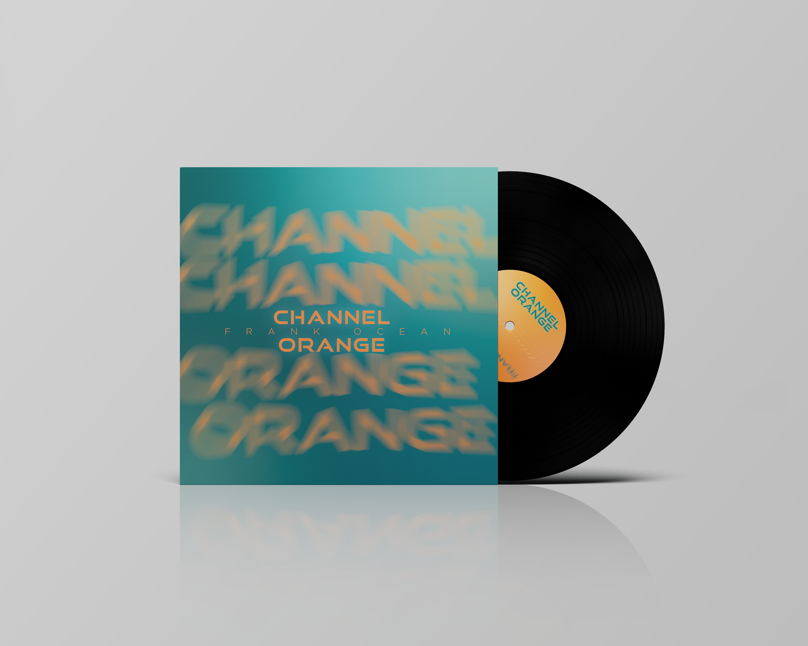
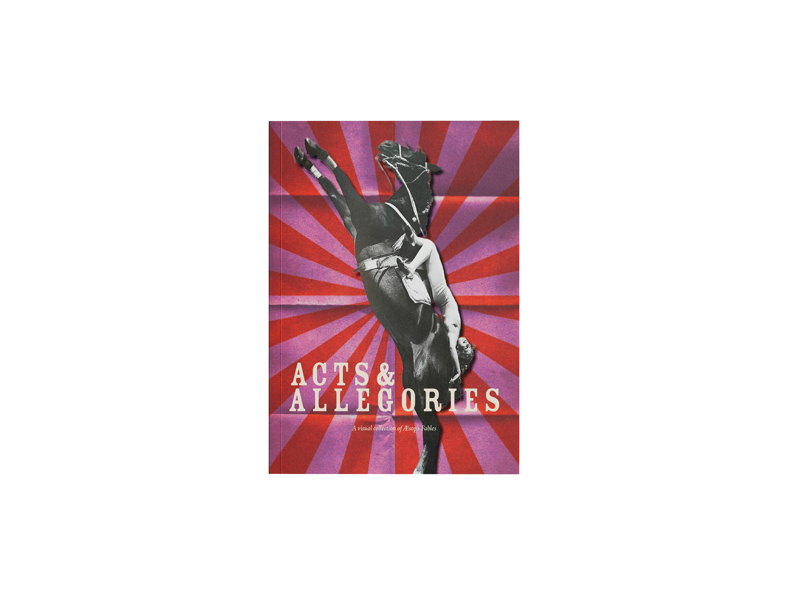

Cara Spratlin
Graphic Designer
Resigning a Menu Leverett Lounge

This project was directed by professor Sarah Willis, I was instructed to visit a restraunt and analyze the atmosphere of my setting, then redesign the menu of the restraunt based on atmosphere, vibe, and branding using only typography and illustrations by me. I chose to base my menu around this massive peacock that I found myself sitting beneath in Leverett Lounge. I illustrated a surface design to mimmick the peacock and use it as an element in my menu along with a new logo I designed.
Resigning an Album Cover Chanel Orange

This project was directed by professor Sarah Willis, where I was instructed to choose an album cover that spoke to me and listen thouroughly to the music in the album and then design accordingly a new album cover out of only typography and texture an interesting composition that paid homage to the music in the album. I chose the album Chanel Orange by Frank Ocean.
Acts and Allegories A Visual Collection of Fables

This was a project directed by Professor David Chioffi where we were given the oppurtunity to take on roles as a cohort and together come up with a creative concept to display AEsops fables. I was elected by my peers as the design manager of this project and as a cohort we decided to visually depict the fables through the lens of the circus from historically accurate and authentic imagery from the 1800-1950s, along with metaphors about the circus displayed via typography, color, and layout choices. As the design manager of this book project I took on the roles of art directing spreads and design choices, choosing color, imagery, and typography themes throghout the book, and working closely with the project manager and production teams to create a seamless workflow and a cohesive book.
© cara spratlin 2026